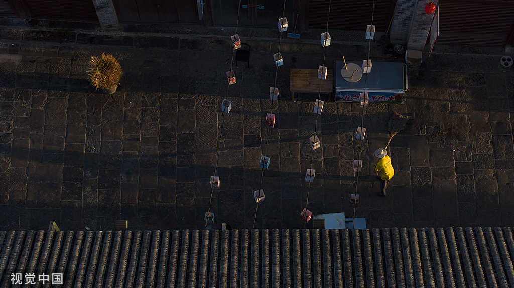
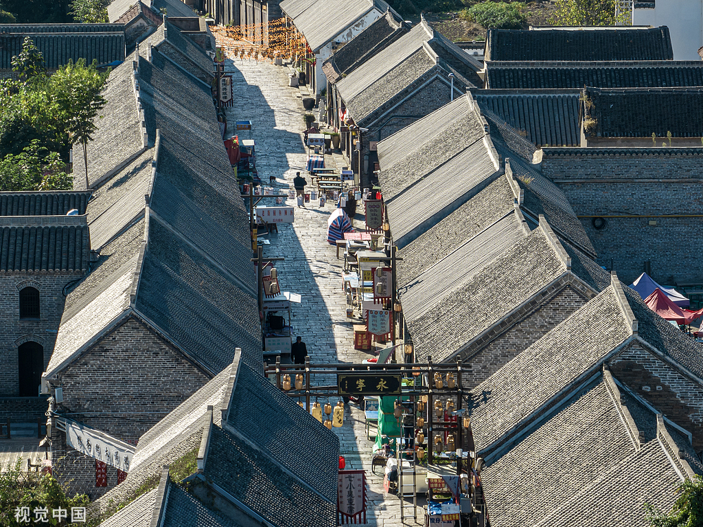
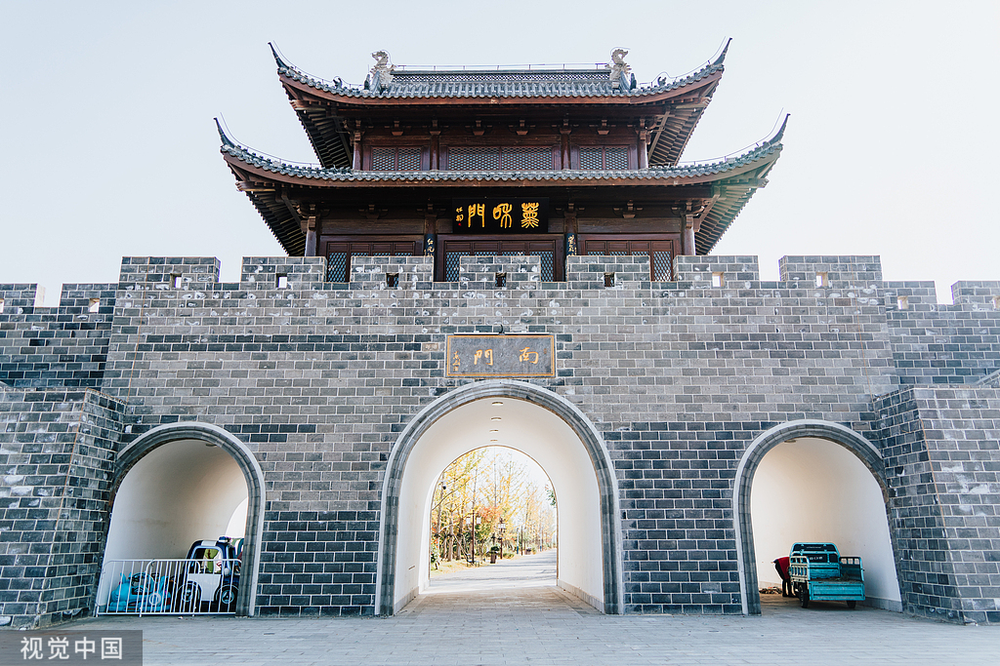
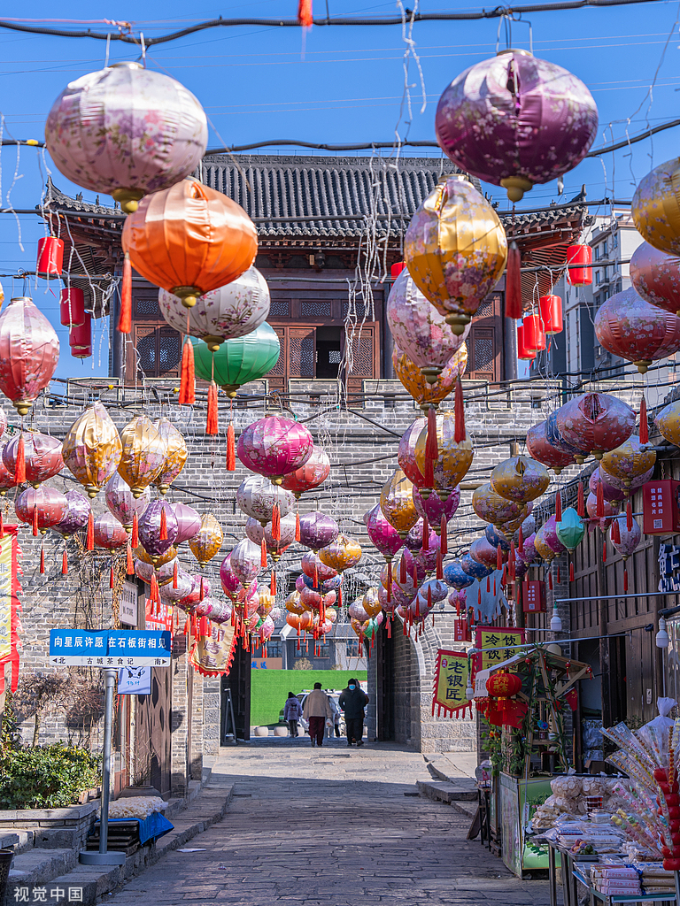

景点介绍
濉溪古镇位于淮北市濉溪县，有着千年历史，是淮北市重要的历史文化街区。古镇因濉河而得名，是皖北地区保存最为完好的古镇之一。
石板老街是濉溪古镇的核心区域，全长约1.5公里，街道由青石板铺成，两侧是保存完好的明清时期建筑。这些建筑多为砖木结构，飞檐翘角，雕梁画栋，具有典型的皖北建筑风格。老街两侧店铺林立，经营着当地特色商品和美食，如濉溪烧饼、油茶、酱菜等，是体验当地民俗文化的好去处。
濉溪古镇历史悠久，文化底蕴深厚，曾是皖北地区重要的商业中心和交通枢纽。古镇内有许多历史遗迹和文化景点，如临涣茶馆、淮海战役总前委旧址、濉溪老城石板街等，吸引了众多游客前来参观。
近年来，濉溪古镇进行了保护性开发，在保留历史风貌的同时，完善了旅游设施，成为淮北市的重要旅游景点。每年的农历正月十五，古镇会举办盛大的灯会，吸引大量游客前来观赏。

石板老街
濉溪古镇的核心区域，全长约1.5公里，街道由青石板铺成，两侧是保存完好的明清时期建筑。这些建筑多为砖木结构，飞檐翘角，雕梁画栋，具有典型的皖北建筑风格。老街历史悠久，曾是皖北地区重要的商业中心和交通枢纽。如今，老街仍然保持着传统的风貌，是淮北市重要的历史文化街区，吸引着众多游客前来参观。

老街店铺
濉溪古镇石板老街两侧店铺林立，经营着当地特色商品和美食。这些店铺大多保持着传统的经营方式，出售着濉溪烧饼、油茶、酱菜等当地特色美食，以及手工艺品、古玩等商品。店铺的门面装饰古色古香，与老街的整体风格相得益彰。游客可以在这里品尝当地美食，购买特色商品，感受浓厚的市井文化氛围。

濉溪古城
濉溪古城位于安徽淮北濉溪老城，国家4A级景区 ，始建于明万历十七年（1589年） ，前身为宋代兴起的“濉溪口”，明清时为皖北商贸重镇 。核心为石板街，青石板铺就，车辙深深，呈“一街八巷”格局。古城分石板街、南大街、水街、乾隆湖四大片区，保留明清规制 。常驻淮北泥塑、剪纸、皮影戏等30项非遗 ，古戏台常演地方戏曲 ，集老字号、文创、民宿于一体 。修复凝曦门等文保单位，融传统与沉浸式体验，是皖北保存完好的历史文化街区。

古镇灯会
每年农历正月十五，濉溪古镇都会举办盛大的灯会，吸引大量游客前来观赏。灯会上，各种造型精美的花灯挂满了老街，灯火辉煌，热闹非凡。游客可以欣赏到传统的舞龙舞狮表演，品尝当地特色美食，感受浓厚的节日氛围。灯会不仅是濉溪古镇的传统习俗，也是淮北市重要的文化活动，展示了当地的历史文化和民俗风情。